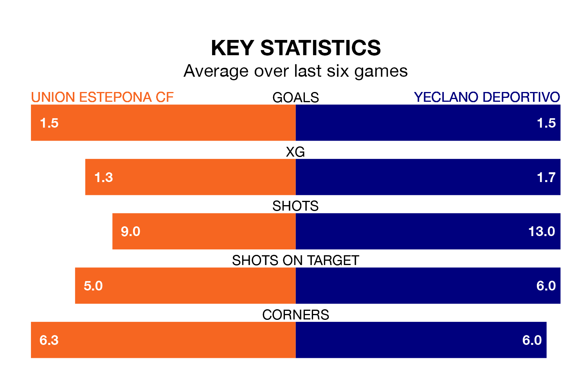

Two of Segunda División RFEF Group 4's top sides face each other in Sunday's early kick-off, when fourth-placed Union Estepona CF host second-placed Yeclano Deportivo.
Union Estepona have picked up nine wins and three draws from 17 games so far this season, and sit four points below the visitors going into the 11am match.
Yeclano Deportivo, meanwhile, have won 10 and drawn four, picking up 34 points.
With 22 goals in 17 games so far this season, Yeclano Deportivo are the league's joint-third-highest scorers with 1.3 goals per game. And they are conceding fewer than average, letting in 15 goals at a rate of 0.9 per game.
Union Estepona, meanwhile, are average scorers, with 1.1 goals per game. They have conceded 0.7 goals per game.
The home team are in good form in Segunda División RFEF Group 4, with four wins and two draws from their last six games.
But with five wins and a draw over that period, the visitors' form is even better – they have taken 16 points from 18, compared to Union Estepona's 14.
Union Estepona's last match was on January 7, a 1-1 draw against Real Betis B.
Yeclano Deportivo beat Manchego 1-0 last time out, also on Sunday.
Updated: 11:31, 09/01/24